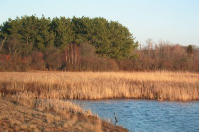
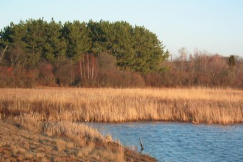

The Wetlands

 

What is a Wetland?
Wetlands are areas that connect deep water and land. There are three types of wetlands – marshes, swamps, and bogs – and each of them is different. Swamps are slow moving streams or rivers that host those trees and shrubs that grow in very wet soil. Marshes contain plants that grow with their stems partly in and partly out of the water, and support a wide variety of plants and animals. The water in marshes primarily comes from snow melt and rain. Some marches have a stream where water flows in or out, while in other marshes water enters or leaves underground through the soil.
Bogs are fragile environments that require special situations to form and are found mainly in northern environments. Bogs form in holes, called kettle holes, formed by glaciers. There is usually no flow of water in or out of a bog. Without a flow of water, dead plants and animals do not completely decompose which forms a spongy soil called peat.
Why are wetlands important?
Wetlands prevent flooding by acting as sponges. Wetlands absorb water in the spring, during storms, or whenever water levels are high. When water levels are low, such as in summer months, wetlands release water. Wetlands also filter and purify the water that passes through, and release plant material into rivers, which helps to feed fish.